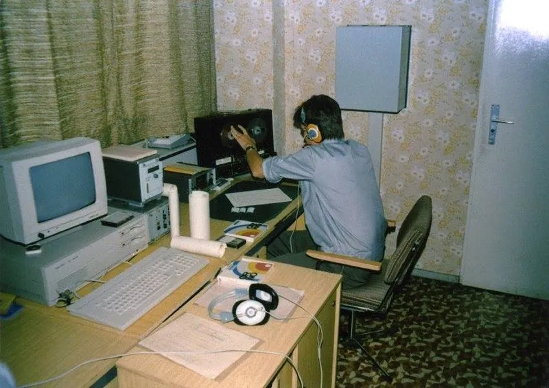

P R E S S E M E D D E L S E : Eigil Leegaard og Kaptajn Bjørnsteen til start ved Danmark Rundt i EDB-cykling

Eigil Leegaard og Kaptajn Bjørnsteen stiller til start når eCykle Klub Danmark i samarbejde med Danmarks Cykle Union afholder den første virtuelle udgave af etapeløbet Danmark Rundt – Bkool Danmark Rundt.
Det er klart, at når nu den moderne EDB-cykling kaster sig ud i etapeløb i Danmark, ja, så må vi jo være med. Vi har netop fået opgraderet vores udstyr med spritnye IBM-computere og lynhurtige modems, fortæller Kaptajn Bjørnsteen.
Bkool Danmark Rundt er på 7 etaper, fordelt over hele landet. Løbet starter 15. januar 2021 og kører over 7 mandage. Hver etape livestreames – og der dystes om en samlet præmiesum på over 10.000 kr

Kaptajn Bjørnsteen kommer nok til at hjælpe mig gennem de første flade etaper. Men på 4. etape fra Bredsten til Egtved, hvor vi kommer til bankerne i Vejle Ådal, dér er jeg på hjemmebane. Her vil jeg stikke i højre og venstre, siger Eigil Leegaard.
Sidst år kvalificerede Squadra Moltenis Kaptajn Bjørnsteen sig til DM i EDB-cykling i Gislevhallen på Fyn. Her var Kaptajnen sekunderet af den russiske hacker Dimitri. Men en fejl på en floppy-disk gjorde, at Kaptajnen ikke nåede i finaleheatet, selv om han klart havde kvalificeret sig.
Det er klart, at vi ikke vil ende i en situation igen, hvor vi snydt af teknologien. Derfor har vi indgået et samarbejde med Ministerium für Staatssicherheit, i DDR. De vil overvåde vores internetforbindelser, og Bkools servere. Så vi er sikre på, at alt går fair til, afslører Kaptajn Bjørnsteen.


Etaperne i Bkool Danmark Rundt:
- etape: 15. feb, Præstbro – Frederikshavn, 33.6 km
- etape: 22. feb, Hurup – Thisted, 38.7 km
- etape: 1. mar, Stevnstrup – Stevnstrup, 33.5 km
- etape: 8. mar, Bredsten – Egtved, 30 km
- etape: 15. mar, Strib – Strib, 42.8 km
- etape: 22. mar, Vipperød – Vipperød, 33.9 km
- etape: 29. mar, Roskilde – Skuldelev, 40.9